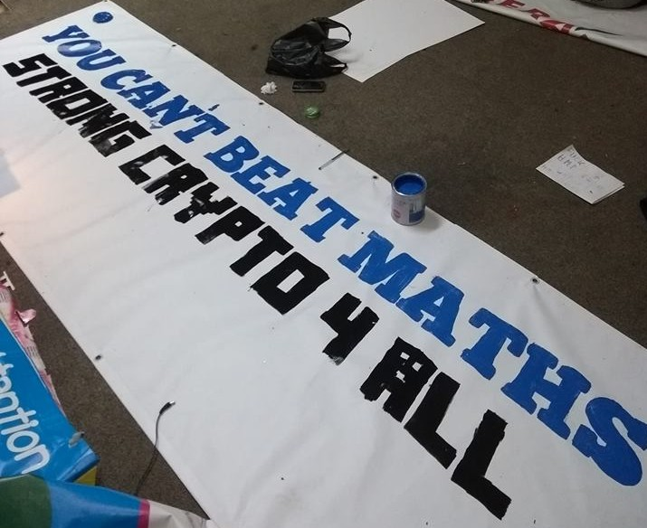

Can I arrange an interview with Lauri? Is there anyone else I can speak to? Do you have any photos I can use? Lauri's court dates are often quite busy, but we will try to facilitate as many requests as we can. Please get in touch to discuss.
Monday 10 February 2019 BBC Computer Weekly East Angla Daily Times Guardian Independent The Register
Sunday 10 February 2019 BBC Ilta Sanomat MTV Uutiset YLE
Wednesday 6 February 2019 The Register
Wednesday 19 January 2018 Computer Weekly